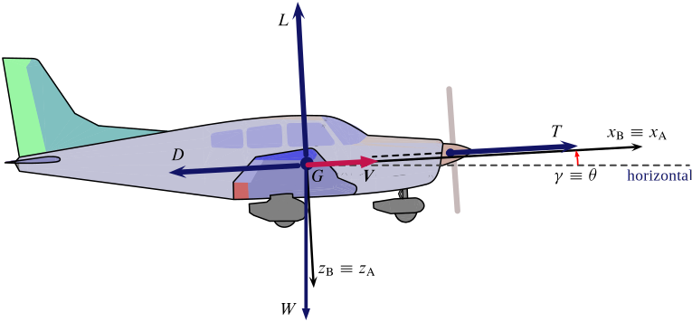

Quickstart
To use JSBSim productively you might want to assume a programmer's attitude. This means you will have to download the sources yourself and compile them on your platform. With the right set of tools installed on your computer, this is a painless procedure after all.
For the impatients, there are automatic remote build procedures that deliver up-to-date binaries of the library. These can be found on the following links:
Builds provided by the FlightGear project developers (Jenkins server)
Go to the workspace area build.flightgear.org:8080/job/JSBSim/ws and download all files as a Zip archive. Explore the archive, go to the folder /JSBSim/build/src/, and find: the executable file JSBSim and the static library file libJSBSim.a.
Go to the workspace area build.flightgear.org:8080/job/JSBSim-win/ws and download all files as a Zip archive. Explore the archive, go to the folder /JSBSim-win/build/src/Debug/, and find: the executable file JSBSim.exe and the static library file JSBSim.lib.
This effort of providing pre-compiled binaries of JSBSim is part of the continuous integration and delivery service for the FlightGear project. To learn more about continuous integration with Jenkins you might want to visit this link.
Builds provided by the JSBSim-Team (Travis server and AppVeyor server)
The JSBSim-Team provides its own Continuous Integration service that delivers x64 binaries for both Ubuntu 14.04.5 LTS (Trusty Tahr) and MS Windows. The releases are tagged v2018a (or later) and can be downloaded from the Releases section of the GitHub repository.
To check the current status of the latest builds one can go and visit the links:
-
Travis build for Ubuntu (include tests with both Python 2.7 and 3.6)

-
AppVeyor build for Windows (no tests)
